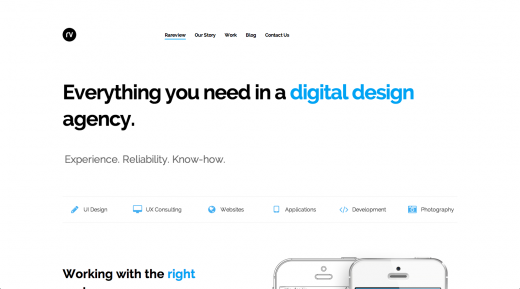
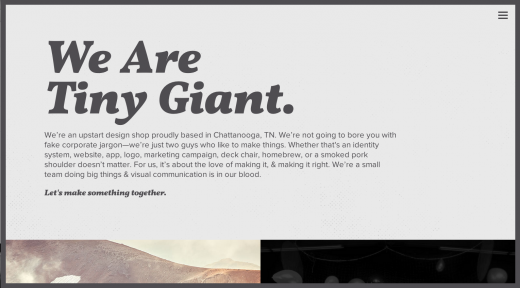

Cada año, el diseño web avanza rápidamente, y casi cada día aparecen nuevos diseños. Puedo imaginar que en 2015 aparecerán los mejores sitios web, incluyendo muchas tendencias que ya se predijeron en 2014. A medida que estas tendencias se materialicen alrededor de 2015, es hora de que predigamos las nuevas tendencias que podrían surgir en 2015. Todos están reflexionando sobre 2014 y mirando hacia 2015; a continuación, veamos las tendencias de diseño web que podrían aparecer en 2015.
El desplazamiento de página se vuelve más popular
La mayoría de los sitios web nuevos que aparecen hoy tienden a tener páginas más largas y a pasar de página mediante el desplazamiento. Con la creciente popularidad de los dispositivos móviles, navegar por el contenido en la pantalla mediante el desplazamiento se está volviendo cada vez más común, reemplazando al clic, especialmente en la página principal de los dispositivos. Para los usuarios, obtener información desplazándose es claramente más sencillo que hacer clic constantemente en botones.
La página principal no es el único lugar donde el desplazamiento se vuelve más popular. A medida que los sitios web de desplazamiento ultralargo (es decir, sitios de una sola página) se vuelven cada vez más populares, los beneficios del desplazamiento también aumentan; además de la página principal, esta modalidad ha comenzado a aparecer en muchos otros lugares, como las páginas "Acerca de" y las páginas de producto, que se han convertido en una forma sencilla de mostrar diversos contenidos. Por ejemplo, el desplazamiento de página del sitio del iPhone 6 de Apple se ha extendido a muchos lugares para mostrar las diversas características y el rendimiento del producto. Además, el sitio del iPhone 6 ha añadido algunas animaciones fluidas que hacen que la experiencia de desplazamiento sea visualmente más atractiva.

Narrativa + Interacción
Para un sitio web, tener contenido sorprendente es siempre crucial, y usar ese contenido para contar una historia es una gran ventaja. El diseño web en 2015 probablemente se centrará en cómo contar historias a los usuarios. Por ejemplo, el sitio web de Space Needle (la aguja espacial, monumento de Seattle, EE. UU.) es muy bonito; presenta información sobre Space Needle mediante la narración de historias y lo respalda con un diseño de desplazamiento de página. Space Needle también demuestra otra tendencia de 2015: la interacción. El diseño web está añadiendo más elementos interactivos y animaciones para ayudar a presentar el contenido de una manera única y atractiva. Incorporar interacción y animación al diseño web puede aportar un factor sorpresa a tu sitio. Por ejemplo, el sitio de Impossible Bureau es muy interactivo y responde a tu desplazamiento y al pasar el cursor.

Ausencia de imágenes de fondo en los titulares grandes
En los últimos años, las imágenes de fondo en los titulares grandes, a menudo con texto de descripción, han sido muy populares en el diseño web; también son lo primero que la mayoría de los visitantes ve al navegar por un sitio. Con tanta popularidad de las imágenes de fondo en los titulares, ¿cómo puede tu sitio destacarse? Tomando la medida contraria. Algunos sitios web aparecidos recientemente van contra la corriente, es decir, sin imágenes de fondo en los titulares. Supongo que no solo lo hacen por no seguir la moda, sino también por buscar mejorar el rendimiento y la velocidad del sitio. El sitio de New Wave Company refleja estas características. Utiliza un titular grande para dar la bienvenida a los visitantes, con una tipografía grande centrada en la página, pero sin una gran imagen de fondo detrás del titular. Es una práctica elegante cuyo efecto no es inferior al de otros diseños web populares que usan grandes imágenes de fondo.

Eliminar elementos de diseño innecesarios
Existe una filosofía de diseño que sostiene que el diseño web no está completo hasta que se eliminan todos los elementos innecesarios. En 2015, creo que podremos ver esta filosofía reflejada aún mejor, ya que cada vez más sitios intentan simplificar su diseño eliminando elementos no esenciales. La eliminación de la gran imagen de fondo en el sitio de New Wave Company es uno de los mejores ejemplos. Otro gran ejemplo de eliminación de elementos de diseño no esenciales para garantizar la simplicidad es el sitio de Rareview Digital Agency, que tampoco usa un titular con gran imagen de fondo para saludar a los visitantes. Los diseñadores han eliminado en realidad muchos elementos de diseño populares en los sitios actuales, como colores de fondo, numerosas imágenes y diseños complejos. En cambio, optan por un diseño web más claro y limpio, que resulta refrescante entre los sitios web actuales centrados en el diseño, las imágenes y el color.

Diseño de sitio web centrado con ancho fijo
En los últimos años, la mayoría de los sitios web han utilizado un diseño centrado en el ancho, que permite que las imágenes o las extensiones visuales se muestren en todo el viewport del navegador. Antes de que esta tendencia se volviera popular, la mayoría de los sitios tenían un ancho fijo, con el contenido centrado en la página, y se podían ver los extremos laterales del sitio. La tendencia del ancho fijo parece estar regresando de una manera más moderna, solo que el sitio y su contenido ya no están en los laterales del viewport; algunos sitios optan por un ancho máximo para asegurarse de que su contenido quede centrado en el viewport. El sitio de Michele Mazzucco es un ejemplo de esto.

Fotografía personalizada profesional de alta calidad
Las fotos de stock siguen teniendo un lugar en el diseño, pero en la mayoría de los sitios web más recientes, las fotos de stock están dando paso a fotografías profesionales de alta calidad, que suelen ser únicas y tomadas a medida para el sitio. El uso de fotografía personalizada supone un avance en el diseño en comparación con limitarse a elegir fotos de stock; hace que tu sitio sea único, y otros sitios no pueden usar las mismas fotos. Por ejemplo, las fotos personalizadas del sitio de Grain and Mortar usan el titular del sitio, lo que muestra un efecto personalizado, porque las personas y las escenas de oficina en las fotos existen realmente en Grain and Mortar; después de todo, ¡no hay fotos de stock de espacios de oficina falsos!

Menús tipo aplicación emergentes/deslizantes
El diseño web adaptativo (responsive) ha sido popular desde hace tiempo, pero hasta hace poco, la mayoría de los diseños web se centraban en hacer que el sitio se viera mejor en computadoras de escritorio, mientras que en teléfonos o tabletas solo era aceptable que se viera más o menos bien. Independientemente del dispositivo, el diseño web adaptativo avanza hacia una mejor experiencia. Estamos viendo cómo este elemento de diseño se traslada a los dispositivos móviles y se utiliza de forma más amplia. Por ejemplo, 24ways y Rawnet muestran esta idea, añadiendo menús tipo aplicación y adaptativos en todo el sitio, no solo en dispositivos con viewports más pequeños. En este caso, estos dos sitios optan por menús verticales a la izquierda o a la derecha, en lugar de menús horizontales en la parte superior, que se usan más como menús emergentes/deslizantes tipo aplicación; esta técnica permite que las aplicaciones web y el diseño adaptativo aparezcan en viewports más pequeños.

Ocultar el menú principal
Esto es muy similar a los menús emergentes/deslizantes tipo aplicación discutidos anteriormente. Espero que más sitios puedan ocultar el menú principal a los visitantes que acceden por primera vez. Estos menús ocultos solo se muestran cuando el visitante está dispuesto a moverse y hacer clic en el icono correspondiente. Esta técnica de diseño adaptativo está empezando a aparecer en el diseño web, no solo en viewports pequeños. El nuevo sitio de Brian Hoff Design es el mejor ejemplo. Utiliza el icono de hamburguesa en la esquina superior derecha del sitio para ocultar la navegación hasta que el visitante hace clic en él. En los últimos dos años, este comportamiento se ha ido aceptando gradualmente; los visitantes se están acostumbrando a operar así en aplicaciones web o aplicaciones móviles. Él ha aplicado este patrón al sitio web, lo que ayuda a garantizar que el sitio sea conciso y completamente funcional independientemente del tamaño del viewport.

Fuentes muy grandes
En 2014, la tipografía jugó un papel importante en muchos diseños web, y no veo señales de que esta tendencia cambie a corto plazo. Pero en 2015, veo que los títulos y las fuentes en los sitios web se están volviendo cada vez más grandes. Exagerando, incluso los aviones en el cielo podrían ver las letras en el suelo. Cuando visitas el sitio de Tiny Giant, verás fuentes muy grandes. Esto es en realidad una declaración difícil de pasar por alto. Las fuentes grandes seguirán desempeñando un papel importante en el diseño web en 2015, convirtiéndose en un método para garantizar la mejora de la jerarquía visual para los visitantes. Los visitantes verán primero la fuente más grande, porque eso atrae tu atención en primer lugar.

Rendimiento y velocidad
Muchas tendencias de diseño están impulsadas por la necesidad de hacer que los sitios web carguen más rápido y consuman menos ancho de banda. La mayoría de las tendencias discutidas en este artículo probablemente requieran reducir el tamaño del sitio y buscar formas de carga más rápida para los usuarios de teléfonos móviles, tabletas o redes más lentas. Los diseñadores y desarrolladores web son cada vez más conscientes del peso de sus sitios y de cómo los usuarios interactúan con ellos. El diseño web adaptativo ha ayudado a aliviar estas preocupaciones. Factores como la lentitud de la red y el tipo de dispositivo obligan a los diseñadores y desarrolladores a prestar mucha atención al tamaño de sus archivos y del sitio; la velocidad de carga del sitio también varía según las condiciones de la red. No es de extrañar que en 2015 se necesiten sitios web fluidos, con carga más rápida y sin retrasos.
Fuente: Tencent Technology
Haz clic para compartir notas
<p style="font-size:14px;">¡La nota debe ser una extensión del contenido de este artículo!</p><br> <p style="font-size:12px;"><a href="../tougao.html" target="_blank">Para enviar artículos, haz clic aquí</a></p> <p style="font-size:14px;"><a href="./runoob-user-test-intro.html" target="_blank">Cómo obtener el código de invitación para registrarse</a></p> <h3 class="text-muted"><i class="fa fa-info-circle" aria-hidden="true"></i> ¡Antes de compartir notas, debes <a href=".." class="runoob-pop">iniciar sesión</a>!</h3> <p><a href="./runoob-user-test-intro.html" target="_blank">Cómo obtener el código de invitación para registrarse</a></p>